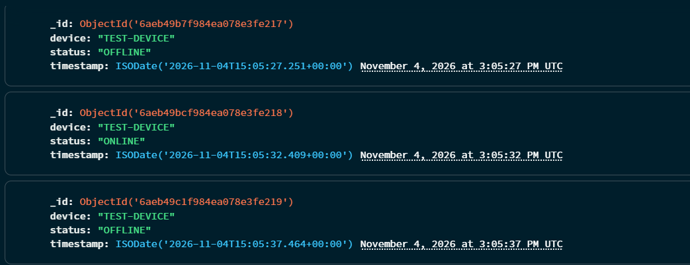
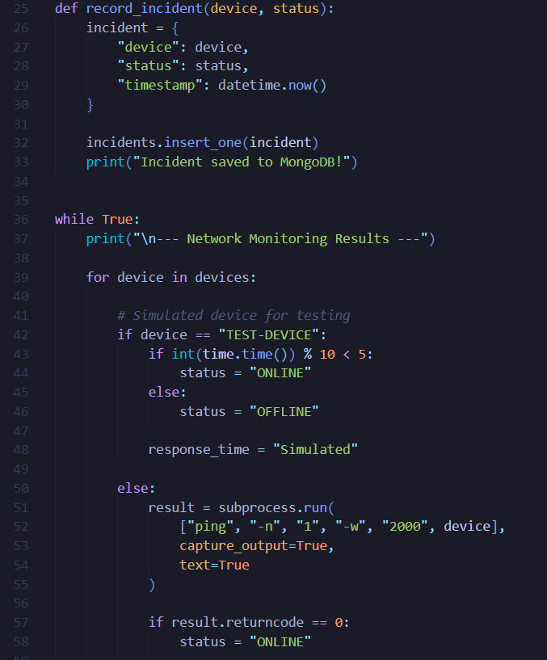
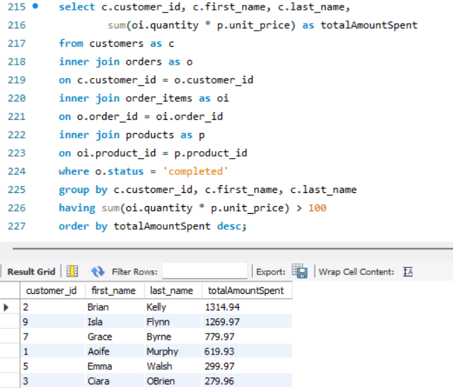
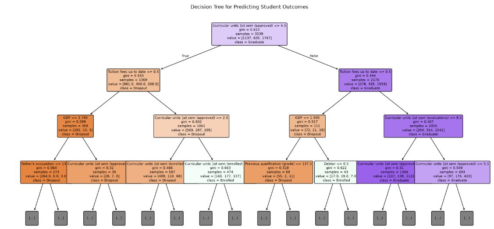

HELLO, I'M SEAN.
Final-year Software Design with AI for Cloud Computing student at TUS, with an interest in networking, cloud computing, databases and practical technology solutions.
AREAS OF INTEREST
I'm a final-year Software Design with AI for Cloud Computing student at Technological University of the Shannon.
Throughout my studies, I've developed an interest in networking, databases, cloud computing and practical technology solutions. I enjoy working with different technologies and developing my technical skills through hands-on projects.
Alongside my education, I've gained experience working in different professional environments, helping me develop communication, teamwork and problem-solving skills.
I'm looking forward to starting my professional career and continuing to develop my knowledge and experience within the technology industry.
Technologies and tools I have worked with throughout my studies.
Python
JavaScript
HTML & CSS
MongoDB
MySQL
SQL
Network Monitoring
Networking Fundamentals
Cloud Computing
Visual Studio Code
Git & GitHub
Jupyter Notebook
A selection of projects developed during my academic journey.
A Python-based system designed to monitor network devices, detect connectivity issues and record incidents. The project uses MongoDB to store network fault information.


Final Year Project
Academic database development work involving relational databases, SQL queries, data management and database operations.

Academic Project
Worked with datasets using Python to explore data preprocessing, analysis, classification and machine learning techniques.

Academic Project
Final-year student developing skills in software design, networking, databases, cloud computing and artificial intelligence.
Recognised for academic achievement during first year.
Gained practical experience with Angular, Node.js and MongoDB, contributing to software development and database-related tasks.
Supporting hotel operations, assisting guests and maintaining standards during overnight shifts.
Assisted with daily operations, practical tasks, material handling and teamwork.
Assisted attendees, supported crowd management and helped maintain a safe environment at events.
Assisted customers, handled stock and supported everyday retail operations.
Interested in connecting or discussing opportunities? Feel free to reach out.